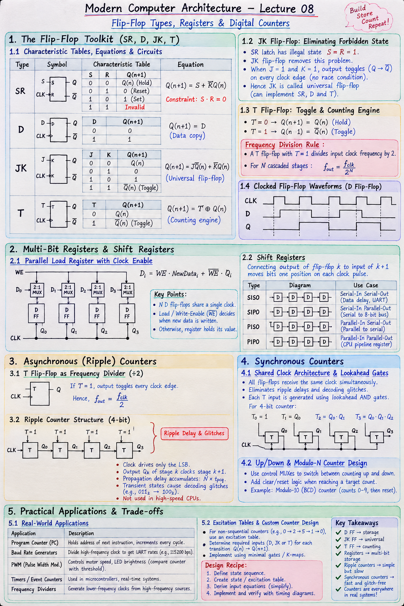

Short Notes & Visual Summary
Quick summary and key equations for Lecture 08:
- D Flip-Flop: \(Q(n+1) = D\) (Data delay/copy).
- JK Flip-Flop: \(Q(n+1) = J\bar{Q}_n + \bar{K}Q_n\) (\(J=1,K=1 \implies \text{Toggle }\bar{Q}_n\)).
- T Flip-Flop: \(Q(n+1) = T \oplus Q_n\) (\(T=1 \implies \text{Toggle}\), \(T=0 \implies \text{Hold}\)).
- Frequency Division Rule: A T flip-flop with \(T=1\) divides clock frequency by 2 (\(f_{\text{out}} = f_{\text{clk}} / 2^N\) for \(N\) stages).

Click image to open high-resolution version in new tab
The Flip-Flop Toolkit (SR, D, JK, T)
1.1 Characteristic Tables & Equations
While a single flip-flop stores 1 bit, different internal gating designs determine how the stored bit updates on a clock edge. The four fundamental types constitute the complete digital design toolkit:
- SR Flip-Flop: \(Q(n+1) = S + \bar{R}Q_n\) (Constraint: \(S \cdot R = 0\)).
- D Flip-Flop: \(Q(n+1) = D\) (Default building block for CPU registers).
- JK Flip-Flop: \(Q(n+1) = J\bar{Q}_n + \bar{K}Q_n\) (Universal flip-flop).
- T Flip-Flop: \(Q(n+1) = T \oplus Q_n\) (Dedicated counting engine).
1.2 JK Flip-Flop: Eliminating Forbidden State
The JK Flip-Flop reclaims the illegal \(S=R=1\) state of the SR latch. When \(J=1\) and \(K=1\), the output toggles to its complement (\(Q \to \bar{Q}\)) on every clock edge without any race condition.
1.3 T Flip-Flop: The Toggle & Counting Engine
By tying inputs \(J\) and \(K\) together into a single terminal \(T\), we form the T (Toggle) Flip-Flop:
- \(T = 0 \implies Q(n+1) = Q_n\) (Hold state).
- \(T = 1 \implies Q(n+1) = \bar{Q}_n\) (Toggle state).
Multi-Bit Registers & Shift Registers
2.1 Parallel Load Registers with Clock Enable
An \(N\)-bit register consists of \(N\) D flip-flops sharing a single clock line. To prevent overwriting the stored word on every cycle, each flip-flop is preceded by a 2:1 MUX controlled by a Load / Write-Enable (\(WE\)) signal:
2.2 Shift Registers (SISO, SIPO, PISO, PIPO)
Connecting the output of flip-flop \(k\) to the input of flip-flop \(k+1\) creates a Shift Register that moves stored bits one position right or left on each clock pulse.
- SISO (Serial-In Serial-Out): Used for data delay lines and serial communication (UART).
- SIPO (Serial-In Parallel-Out): Converts incoming serial byte streams into parallel 8-bit bus words.
- PISO (Parallel-In Serial-Out): Converts parallel CPU register data into serial signals for transmission.
- PIPO (Parallel-In Parallel-Out): Standard CPU pipeline register.
Asynchronous (Ripple) Counters
3.1 T Flip-Flop Frequency Divider (\(\div 2\))
Holding input \(T = 1\) on a flip-flop causes its output \(Q\) to toggle on every active clock edge. Because output \(Q\) completes one full cycle for every two input clock cycles, it functions as an exact divide-by-2 frequency divider.
3.2 Ripple Counter Ripple Delay & Glitch Limitations
In an Asynchronous (Ripple) Counter, the external clock drives only the least significant bit (LSB) flip-flop. The output \(Q_k\) of stage \(k\) serves as the clock input for stage \(k+1\).
Because the clock ripples sequentially through each stage, propagation delays accumulate linearly (\(N \times t_{\text{pcq}}\)). During state transitions (e.g., \(011_2 \to 100_2\)), intermediate transient states produce decoding glitches. Consequently, high-speed CPUs never use ripple counters.
Synchronous Counters
4.1 Shared Clock Architecture & Lookahead Gates
A Synchronous Counter connects the external clock line to every flip-flop simultaneously. All bit transitions occur at the exact same instant, eliminating ripple delays and decoding glitches.
Each T flip-flop's toggle input \(T_k\) is driven by lookahead AND gates evaluating preceding bits:
4.2 Up/Down & Modulo-N Counter Design
Adding control MUXes permits switching between counting up (\(0, 1, 2...\)) and counting down. Adding clear logic when reaching a target count creates a Modulo-N Counter (e.g., Modulo-10 BCD counter).
Practical Applications & Trade-offs
5.1 Timers, Baud Rate Generators & PWM
Digital counters are essential building blocks across processor microarchitecture and embedded microcontrollers:
- Program Counter (PC): Holds the memory address of the next instruction to fetch, incrementing on each cycle.
- Baud Rate Generators: Divide high-frequency system clocks down to precise UART serial frequencies (e.g., 115,200 bps).
- Pulse Width Modulation (PWM): Controls motor speed and LED brightness by comparing a free-running counter against a threshold register.
5.2 Excitation Tables & Counter Design Recipe
Designing custom counters (e.g., non-sequential sequence \(0 \to 2 \to 5 \to 1 \to 0\)) requires an Excitation Table—a reverse lookup table indicating what inputs (\(D, JK, \text{or } T\)) must be applied to achieve a desired state transition (\(Q_n \to Q_{n+1}\)).
Original PDF Notes
Below are the original PDF documents for your reference: